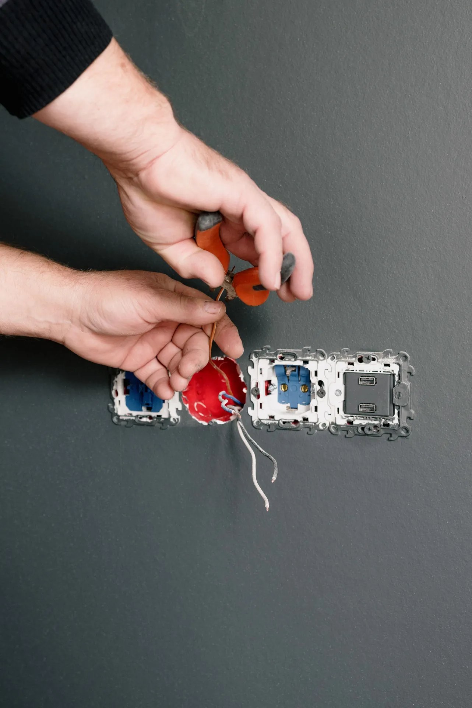

Eletricidade
o essencial, bem feito
Troca de luzes, tomadas, interruptores e disjuntores, e reparações do dia a dia. Trabalho simples, limpo e seguro — sem obra grande. Não fazemos quadros elétricos novos.
Nem tudo precisa de um eletricista para uma semana. Muitas vezes é só trocar uma luminária que deixou de funcionar, mudar tomadas antigas, pôr um interruptor com regulação ou substituir um disjuntor que dispara. É disso que a Dizarro trata — com rapidez, material sério e a casa a ficar arrumada. Quadros elétricos de raiz e instalações completas não fazemos; nesses casos indicamos um parceiro.
O que fazemos
- Troca de luminárias, apliques e focos (interior e exterior)
- Substituição de tomadas e interruptores
- Interruptores com regulação (dimmer) e comandados
- Substituição de disjuntores e diferenciais que disparam ou aquecem
- Montagem de candeeiros, focos e fitas LED
- Pequenas reparações: pontos sem corrente, contactos queimados
- Não fazemos: quadros elétricos novos nem instalações de raiz
Como trabalhamos
Vemos o que se passa, dizemos o que é preciso e o preço antes de mexer. Trabalho limpo, testado no fim, e a casa fica arrumada.
Exemplo real
Apartamento em Matosinhos: substituição das luminárias antigas por LED em toda a casa, troca de tomadas partidas e de um disjuntor que disparava — resolvido numa manhã.
Antes & depois — obra real
Apliques de parede numa fachada de chapa perfilada: da montagem com o casquilho e os fios à vista ao acabamento com a caixa fechada.


